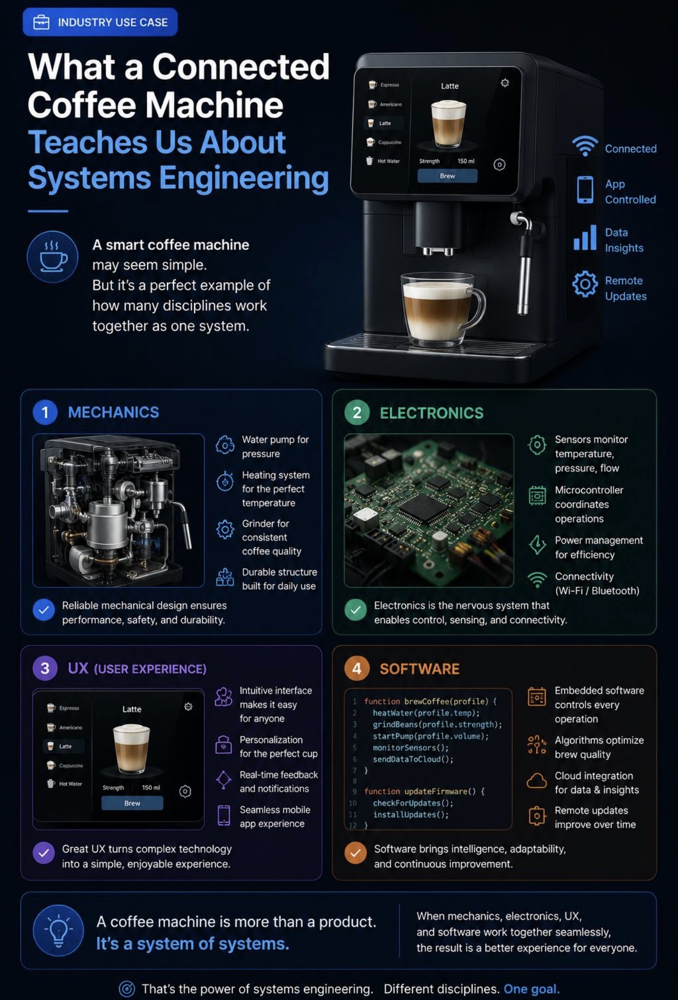

Reference · Systems Engineering Context
A Coffee Machine as a System of Systems
Why a connected coffee machine is a textbook SE problem · Four disciplines · One integrated system · Mapped to CoffCo subsystems
Coffee machines are complex engineered systems integrating thermal, hydraulic, mechanical, and electronic subsystems to deliver precise, repeatable beverages. A smart coffee machine may appear to be a simple domestic appliance — but it is in fact a system of systems in which four distinct engineering disciplines must work together seamlessly to deliver a single user outcome: a quality beverage in under three minutes, without instruction, in an unsupervised hotel room. This is precisely why the CoffCo programme warranted a full systems engineering treatment.
The SE insight. None of these four disciplines can succeed in isolation. A mechanically perfect pump that the firmware cannot control safely is a hazard. An intuitive UI attached to an electronics subsystem that cannot maintain 60°C is a guest complaint. Systems engineering defines the interfaces between these disciplines, allocates requirements to subsystems, and ensures the integrated whole meets the stakeholder need — not just the sum of its parts.
The Four Disciplines — Mapped to CoffCo Subsystems
① Mechanics → SS-2 / SS-3
The Thermal Assembly and Fluid Management subsystems provide the mechanical foundation — water pump (0.9–1.3 bar), heating element (60–95°C), PRV, drip tray, and the consumable loading interlock. Research identifies the brewing unit, portafilter, and dispersion head as critical for proper water distribution and extraction; materials are selected for durability, thermal conductivity, and chemical resistance. Reliable mechanical design is the foundation on which every other subsystem depends.
② Electronics → SS-4 / SS-5
The Power Management and Monitoring & Comms subsystems provide the electronic nervous system — 230V/110V supply regulation, NTC thermistors, pressure transducers, flowmeters, hardware watchdog timer (independent of firmware), and the wireless telemetry module. PID controllers or digital temperature controls maintain precise water temperature; high-end systems employ dual boilers or pre-infusion thermal ramps to synchronise temperature with pressure changes. Safety-critical functions (TCO, WDT IC) are implemented in hardware, not software.
③ UX → SS-1
The User Interface Assembly must satisfy one of the most demanding UX requirements in the portfolio: SRS 2.1 requires the machine to be fully operable by a first-time user without instruction. Touchscreens or button panels allow users to select beverages, monitor status, and receive alerts; the interface integrates with embedded systems to execute pre-programmed brewing sequences. Icon-only controls, a 7-state LED status ring, and a deliberate 2-step CONFIRM BREW gate are all UX decisions driven directly by the SE analysis.
④ Software → SS-2 / SS-5
The Brew Control and Monitoring & Comms subsystems run the firmware that orchestrates all other disciplines — the 11-state finite state machine, sensor monitoring loops, fault detection and safe-shutdown logic, cloud telemetry, and the scheduled OTA firmware update mechanism (SRS 1.11). Microcontrollers orchestrate heating, pumping, and flow profiles; advanced machines implement pressure profiling to modulate extraction dynamically. Software failure is mitigated by a hardware-independent WDT IC (SRS 3.12) and A/B partition rollback.
Key Engineering Subsystems
1
Thermal Management
Modern machines use PID controllers or digital temperature controls to maintain precise water temperature. High-end systems employ dual boilers or pre-infusion thermal ramps to synchronise temperature with pressure changes. Espresso requires 90–96°C for optimal flavour consistency.
CoffCo: SRS 4.1 (≥60°C americano) · SRS 4.2/4.3 (60–90°C milk) · NTC sensors in SS-5
2
Hydraulic & Pump Systems
Rotary vane, gear, or vibration pumps generate 9–19 bar to force water through grounds. Advanced machines implement pressure profiling to modulate extraction dynamically, coordinated with real-time sensor feedback. Fan et al. (2009) identifies pump debris clogging as the top failure mode by frequency.
CoffCo: SRS 1.5 (extraction pressure) · RCM2 FM-23 (pump debris) · OA-IPS-02 (strainer)
3
Control & Embedded Systems
Microcontrollers orchestrate heating, pumping, and flow profiles. Sensors — thermistors, RTDs, and flowmeters — provide feedback for precise control, enabling automated sequences for different brew strengths and cup sizes. Temperature sensors feed the PID controller which adjusts the heater, while the pump modulates flow to maintain extraction quality.
CoffCo: SS-2 Brew Control MCU · SS-5 telemetry · SRS 3.12 hardware WDT · 11-state FSM
4
Mechanical Components
The brewing unit, portafilter, and dispersion head ensure proper water distribution and extraction. Materials are selected for durability, thermal conductivity, and chemical resistance. Elastomer seals and O-rings are critical failure points — Fan et al. (2009) identifies incorrect elastomer specification as a root cause of early seal failure.
CoffCo: RCM2 FM-25 (seal degradation) · OA-IPS-03 (FKM elastomers) · SRS 4.9 food safety
5
User Interface
Touchscreens or button panels allow users to select beverages, monitor status, and receive alerts. The interface integrates with embedded systems to execute pre-programmed brewing sequences. For hotel deployment, zero-instruction operation is the governing constraint.
CoffCo: SRS 2.1 (unaided first-time operation) · SS-1 icon-only controls · 7-state LED ring
6
IoT & Connectivity
Modern machines increasingly incorporate IoT capabilities, enabling remote monitoring, predictive maintenance, and adaptive brewing profiles. Automation and feedback loops ensure subsystems interact seamlessly, with connectivity enabling fleet-level operational insight and OTA software improvement.
CoffCo: SRS 1.11 (OTA firmware) · SS-5 telemetry · Cloud Ops dashboard · MTBF/MTTR tracking
Systems Engineering Considerations
- Stakeholder analysis: machines must meet the needs of consumers (ease of use, consistency), manufacturers (reliability, maintainability), and regulatory bodies (safety, environmental compliance). For CoffCo this is captured in the CATWOE analysis and 42 SRS requirements across four stakeholder groups.
- Safety and environmental compliance: compliance with electrical and thermal safety standards (IEC 60335) is essential. Energy-efficient designs reduce standby power and water waste. CoffCo additionally addresses WEEE, RoHS, REACH, and HACCP compliance across the SRS, Safety Analysis, and Disposal Plan.
- Integration and feedback loops: effective systems engineering ensures subsystems interact seamlessly. Temperature sensors feed the PID controller, which adjusts the heater, while the pump modulates flow to maintain extraction quality. In CoffCo this integration is formalised in the ICD (interfaces II-01 to II-09) and the 7-gate integration sequence.
- Automation and connectivity: IoT capabilities enable remote monitoring, predictive maintenance, and adaptive brewing profiles. The CoffCo Cloud Ops dashboard provides fleet-level telemetry; OTA firmware (SRS 1.11) enables continuous improvement without field engineer visits.
Why this matters for CoffCo. The research confirms that coffee machines are genuinely multi-domain systems — not simple appliances. The CoffCo SE programme applied the full systems engineering lifecycle precisely because the problem demands it: 19 identified hazards, 25 FMECA failure modes, 10 ILS branches, and ≥26,280 h MTBF target across a system that must operate unsupervised for 365 days in a safety-regulated environment. This is not over-engineering. It is appropriate engineering.
Industry Infographic

Industry use case infographic — a coffee machine is more than a product; it is a system of systems